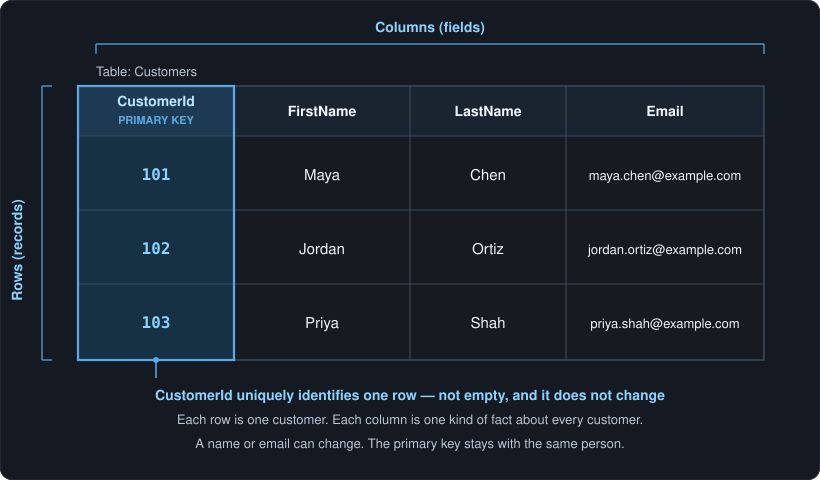

Lab · Lesson 1
Relational tables and primary keys
If you are beginning to learn software development, this is a first hard skill to lock in: business data lives in tables, and each row needs a stable primary key.
Reading is not the finish line. After the example, you will complete an activity that demonstrates the skill: design an Orders table in the companion GitHub project.
What a table is
A table is a grid of facts about one kind of thing. In this lesson that thing is a customer. Later it might be an order, a course, or a product.
- A row is a record — one customer, complete enough to treat as a single item.
- A column is a field — one kind of fact you store for every record, such as last name or email.
A spreadsheet is a useful picture. A database table is stricter: columns have names, each cell in a column holds the same kind of value, and the database can refuse a row that breaks a rule (empty where a value is required, or a duplicate where uniqueness is required).
Why business data uses tables
A shop, clinic, or school does not keep one long paragraph of facts. They keep the same facts, the same way, for many people and many events. Tables make that repeatable.
With a table you can find one customer without rereading a whole file. You can sort, count, and filter. Later you can connect other tables (orders, payments, tickets) back to the same customer. More than one program can read the same structure. That is why this Lab starts here instead of with a pile of unlabelled notes.
Primary key: one row, one identity
A primary key is the column (or a small set of columns)
that uniquely identifies one row. In this lesson it is a single column:
CustomerId.
Three rules to keep:
- Unique. No two rows share the same key. Customer 101 is only Maya Chen in this table.
- Not null. Every row has a key. An empty identifier is not a row you can find again.
- Stable. The key should not change because the person changed their email or last name. Identity stays put; contact details can move.
Use CustomerId, not the customer’s name. Names repeat.
People change spelling, get married, or share a name with someone else.
A number (or another assigned identifier) is a handle the database owns.
A small Customers table
Here is a tiny worked example. Four columns. Three rows. Look at the first column — that is the primary key.

| CustomerId (PK) | FirstName | LastName | |
|---|---|---|---|
| 101 | Maya | Chen | maya.chen@example.com |
| 102 | Jordan | Ortiz | jordan.ortiz@example.com |
| 103 | Priya | Shah | priya.shah@example.com |
If Maya changes her email tomorrow, row 101 is still Maya. The key did not move. That is the point of a stable identifier.
In SQL the same idea looks like this. You do not need to run it to understand the lesson; it is the table above written as a definition.
CREATE TABLE Customers (
CustomerId INT NOT NULL,
FirstName VARCHAR(50) NOT NULL,
LastName VARCHAR(50) NOT NULL,
Email VARCHAR(100),
PRIMARY KEY (CustomerId)
);A common mistake: a changeable field as the only identifier
Beginners sometimes use email, or first name plus last name, as the “id” because those values look unique today. That breaks as soon as real life happens.
- Two customers can share a name. “Jordan Ortiz” is not unique in the world.
- Email addresses get replaced. If email is the key, every related order, ticket, or payment that pointed at the old email now points at nothing — or at the wrong person if the address is reused.
- People correct typos in their own names. A key that changes is not a key; it is a field you edit.
Keep email and name as ordinary columns. Let CustomerId be
the identity. Other tables can store that id when they need to say
“this order belongs to that customer.”
Try this
Your turn — complete the activity
Demonstrate the skill. Design an Orders table for the same shop, with a real primary key. Do the work in the companion GitHub project so you finish with something you can show.
Open the companion GitHub project
Fork the repo (or clone it and work in your own copy). Put your
completed table there — a CREATE TABLE definition and
sample rows is enough. That artifact is the point of this lesson.
- List at least four columns. Include an order identifier, a way to know which customer placed it, an order date, and a total.
- Mark the primary key. Write one sentence: why that column (or those columns), and why the order date alone is not enough.
- Add two sample rows. Make sure the customer values could match someone in the Customers table above.
Hint: the order’s own id is usually the primary key. The customer belongs in the row as a separate column, not as the order’s identity.
Check yourself
Answer these before you open the notes below.
- In a table, what is a row? What is a column?
- Why is
CustomerIda better primary key thanLastName? - Can a primary key be empty? Why or why not?
- Maya Chen changes her email. Should her
CustomerIdchange?
Short answers
- A row is one record (one customer). A column is one field (one kind of fact stored for every record).
- Last names repeat and can change.
CustomerIdis assigned, unique, and stable, so it still identifies the same person after a name or email update. - No. A primary key cannot be null. If the identifier is missing, you cannot tell which row you mean.
- No. The email column changes. The key stays 101 so anything that already points at Maya still finds her.
If you have not yet put an Orders table in the companion project, go back to Try this and finish that before you leave the lesson.